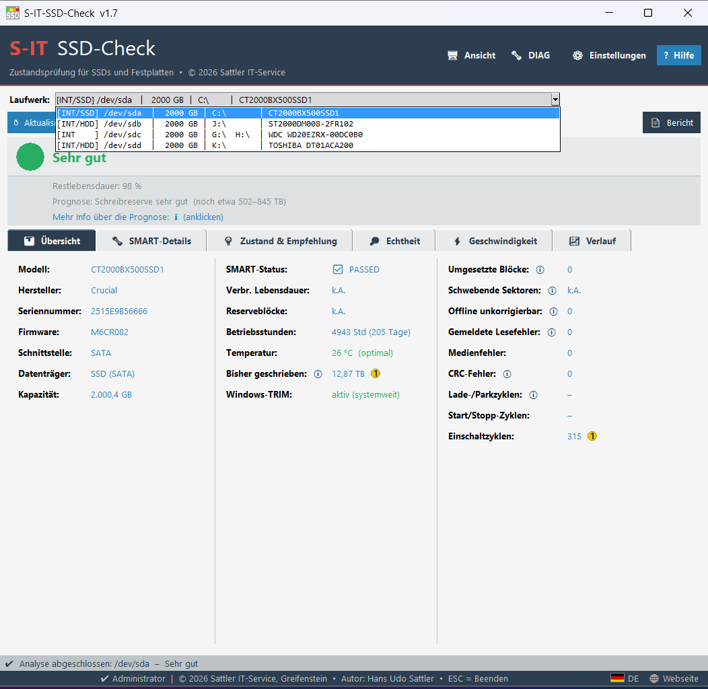
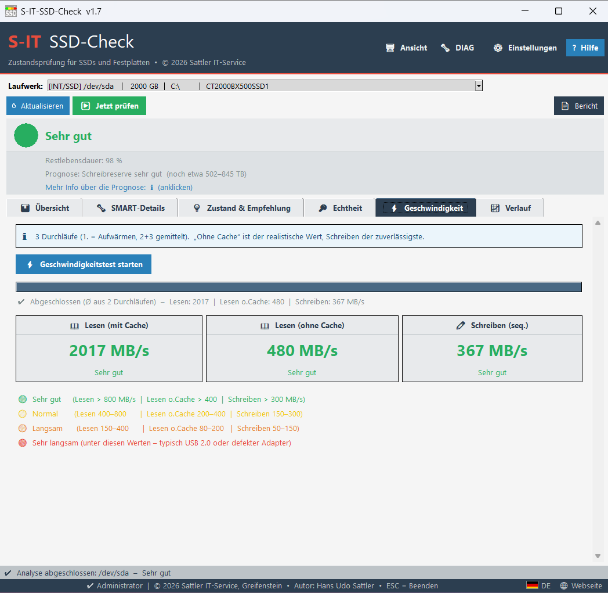
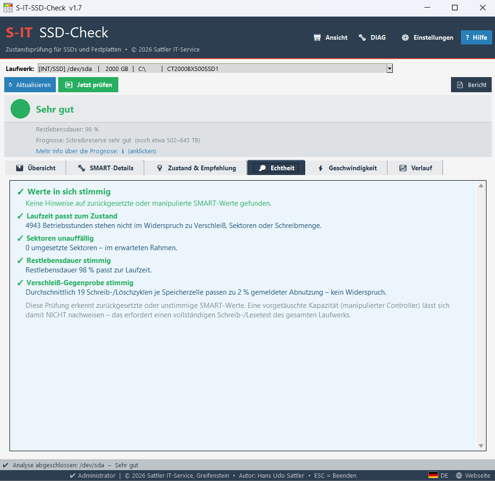
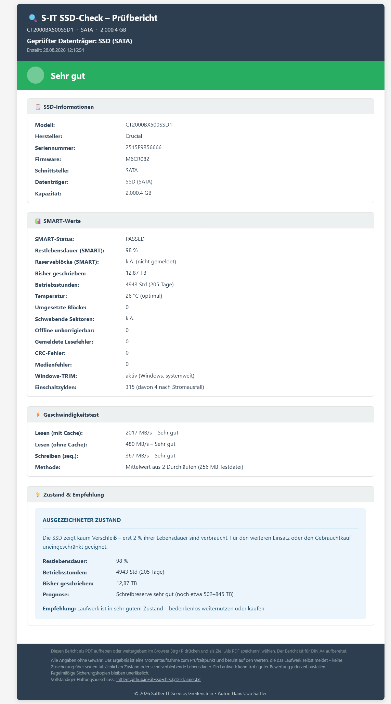

🚦 Ampel-Bewertung – auf einen Blick
SATA & NVMe
Unterstützt alle gängigen SSD-Typen: 2,5"-SATA, M.2 SATA und M.2 NVMe – intern sowie über USB-SATA-Adapter und Dockingstationen.
Automatische Laufwerkserkennung
Zeigt alle angeschlossenen Laufwerke mit Typ (INT/USB), Medienart (SSD/HDD), Größe, Laufwerksbuchstaben und Modellname – sortiert nach Größe.
SMART-Analyse
Liest Restlebensdauer, Betriebsstunden, Temperatur, TBW, Reserveblöcke (NVMe), CRC-Fehler, umgesetzte Blöcke und Medienfehler aus.
Echtheits-Check NEU
Prüft die SMART-Werte auf Plausibilität und erkennt zurückgesetzte Zähler – etwa wenn ein gebrauchtes Laufwerk als „neu“ verkauft wird. Findet Widersprüche zwischen Laufzeit, Verschleiß und Schreibzyklen.
Hersteller-Erkennung
Erkennt automatisch den Hersteller aus dem Modellnamen: Samsung, Crucial, WD, Seagate, Kingston, SanDisk, LiteOn, InnovationIT u.v.m.
HTML-Bericht
Exportiert einen übersichtlichen Prüfbericht als HTML-Datei – für die eigene Dokumentation, zur Weitergabe an Kunden oder als Nachweis beim Gebrauchtkauf.
DPI-Skalierung
Unterstützt Windows-Skalierung von 100 % bis 200 %. Skalierung per INI-Datei voreinstellbar – startet sofort korrekt auf jedem Monitor.




Wie schnell ist eine SSD?
SATA, M.2 und NVMe im Vergleich – welche Werte normal sind und warum Tempo nichts über die Gesundheit aussagt.
Wie schnell ist eine Festplatte?
Warum 140 MB/s für eine HDD ein guter Wert sind – Drehzahl, Datendichte und typische Werte nach Bauart.
Tool-Zweck & Grenzen
Wofür der S-IT SSD-Check gedacht ist, welche Adapter geeignet sind und wo die Grenzen der SMART-Auswertung liegen.
Wie lange hält ein Laufwerk?
Badewannenkurve, echte Ausfallraten (Backblaze) – und warum auch eine gesunde alte Platte regelmäßige Backups braucht.
→ Ausführliche Erläuterung: Tool-Zweck, geeignete Adapter & Bewertungsgrenzen
- Neuer Reiter „🔎 Echtheit“: Plausibilitätsprüfung der SMART-Werte – erkennt zurückgesetzte Zähler bzw. „gebraucht als neu verkauft“ aus Widersprüchen zwischen Laufzeit, Verschleiß und Schreibzyklen
- Unerwartete Stromausfälle (Unsafe Shutdowns) werden neben den Einschaltzyklen angezeigt – z. B. „99 (davon 59 nach Stromausfall)“
- Echte 0 Betriebsstunden werden als „0 Std“ ausgewiesen; neue Bewertungsstufe „Praktisch neu / unbenutzt“ für fabrikneue Laufwerke
- RAID-/Intel-RST-Laufwerke: ehrliche Windows-Gesundheitseinschätzung statt „FAILED“; Modell, Seriennummer und Kapazität werden über Windows nachgezogen
- Windows-TRIM-Status, Lade-/Parkzyklen mit Hinweis auf aggressives Kopfparken (idle3), Einschaltzyklen jetzt auch im SSD-Bericht
- NVMe-Temperaturkorrektur, HDD-Bewertung über echte Defekt-Indikatoren statt Flash-Verschleiß, zahlreiche Detailverbesserungen
- Laufwerkserkennung komplett auf Windows-PowerShell umgestellt – läuft jetzt auch auf neuen Windows-11-Systemen ohne WMIC
- RAID-/Intel-RST-Laufwerke werden klar als „SMART nicht verfügbar“ ausgewiesen – mit Hinweis auf direkten SATA-Anschluss
- Geschwindigkeitstest: Abbruch mit Hinweis bei hängendem Laufwerk (Hardware-/USB-Problem) statt Einfrieren
- Betriebsstunden-Plausibilität: korrekte Auswertung herstellerspezifischer Roh-Werte (u. a. Seagate)
- Geschwindigkeits-Ergebnisse werden bei Laufwerkswechsel zurückgesetzt
- Farbige, deutlich sichtbare Reiter; Karten-Darstellung bei 125 %-Skalierung korrigiert
- Dateiname des Berichts von Sonderzeichen bereinigt (z. B. Anführungszeichen im Modellnamen)
- Geschwindigkeitstest-Tab: Scrollbar per Mausrad bedienbar
- Info-Box: Symbol und Text sauber zweispaltig ausgerichtet
- Neuer Tab ⚡ Geschwindigkeit: sequenzieller Lese-/Schreibtest mit Ampelbewertung
- Temperatur-Bewertungsstufen: optimal / warm / heiß / kritisch mit Farbindikator
- CRC-Fehler im Bericht: Hinweis dass Fehler auf Kabel/Adapter hinweisen, nicht die SSD selbst
- Betriebsstunden-Plausibilitätscheck: Hinweis bei mögl. zurückgesetztem Counter
- HTML-Bericht: k.A.-Felder mit erklärenden Hinweisen und USB-Adapter-Notiz
- Druckoptimierung (@media print) für HTML-Bericht
- SSD/HDD-Erkennung in der Laufwerksliste via smartctl Rotation Rate
- Programm-Icon auf s-it-ssd-check.ico umgestellt
- Tag-Breite in Combobox auf feste 7 Zeichen normiert (kein Flattersatz)
- NVMe available_spare (Reserveblöcke) + Schwellwert-Warnung
- CRC Error Count (Attr. 199) – Kabel-/Adapterqualität sichtbar
- Hilfe-Fenster vergrößerbar
- Optionaler UsbSetup-Button im Footer (wenn S-IT-UsbSetup.exe vorhanden)
- UnicodeDecodeError behoben (encoding=utf-8, errors=replace für alle subprocess-Aufrufe)
- _detect_vendor: HP, LiteOn, InnovationIT, Intenso ergänzt – Reihenfolge korrigiert
- Attr. 190 als Temperatur-Fallback (Samsung 840/850 EVO)
- NVMe-Temperatur Plausibilitätscheck: nur 0–100 °C akzeptiert
- USB-Erkennung dreistufig: --scan + smartctl -i Transport protocol + wmic InterfaceType
- Hersteller-Erkennung aus Modellname (21 Hersteller)
- Laufwerksliste mit Consolas-Font und │-Trennzeichen bündig ausgerichtet
- HTML-Bericht mit dl/dt/dd-Layout – luftig und strukturiert
Redaktion
Über eine kleine Unterstützung freue ich mich:
PayPal – tool-entwicklung@sattler-it.de